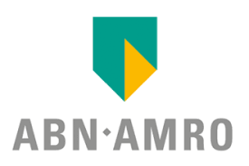
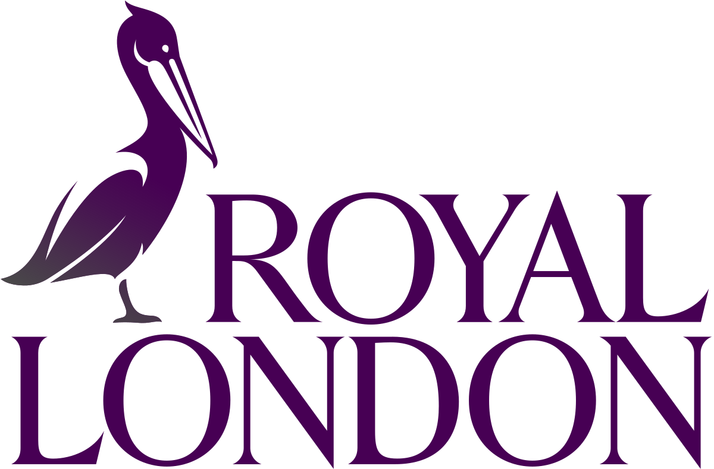
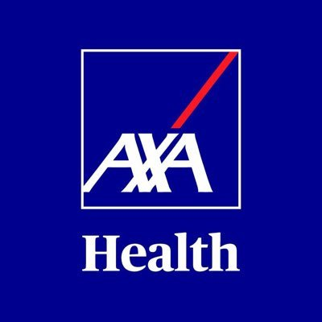

Summary
I have 2.11 years of experience in Azure, Azure DevOps, Terraform as well as in IT industry. It's been always good to know the new things all around the technology and I am be part it on building effective solutions to organisations.
Experience
- Build, deploy and maintain Azure resource using Azure DevOps
- Effective configure of security i.e, AuthN & AuthZ
- Deploy Infra and Platform related resource, mostly data related resources
- Migrate data using AzCopy and Data factory between Azure and On-prem
- As part of security, maintaining security concepts such as Customer-Managed-Keys ( CMK )
- As a Platform Engineer, daily builing IaC languages like terraform, Bicep and ARM templates
- Build super effective YAML and release based Pipelines
- Pipelines are focused to impact all environment with effect use of variables, parameters & templates too
- Maintain fine granular authorisation for Azure Pipeline and it's related resources
- Create and maintain ADO agents for pipelines to run jobs across organisations
- Usage of ADO Environment to configure software, security directly inside Virtual Machines
- Create and maintain service connections used as a link between Azure and ADO
- Having a effective wide range of handsOn across Azure related services
Company: TATA Consulantancy Services ( TCS )
Duration: Feb-2021 - till date
Role: Azure Platform Engineer & Azure DevOps Engineer
Projects
-

ABN AMRO Bank ( Netherlands )
Duration: Mar-2023 to till-date
Role: Azure DevOps Engineer & Azure Platform Engineer

Royal London ( UK )
Duration: Sept-2022 to Feb-2023
Role: Azure Platform Engineer

AXA Health ( UK )
Duration: Feb-2021 to Aug-2022
Role: Azure Administrator & Azure Platform Engineer
Expert level Skills
- Azure
- Azure DevOps
- YAML
- Terraform
- Bicep
- ARM Templates
- Azure Powershell
- Azure CLI
Associate level Skills
- Python
Certifications
| Certification Code | Certification Provider | Detailed Information |
|---|---|---|
| AZ-700 | Azure Network Engineer Associate | Click for more info |
| AZ-104 | Azure Administrator Associate | |
| AZ-900 | Azure Fundamentals |
Technical Participations
- Attended Azure Infrastructure Solutions expert training from Microsoft-TCS
- Attended Azure DevOps expert training from Microsoft-TCS
Volunteer Participations
- NCC Cadet
- NSS Volunteer
- Sports Shooting